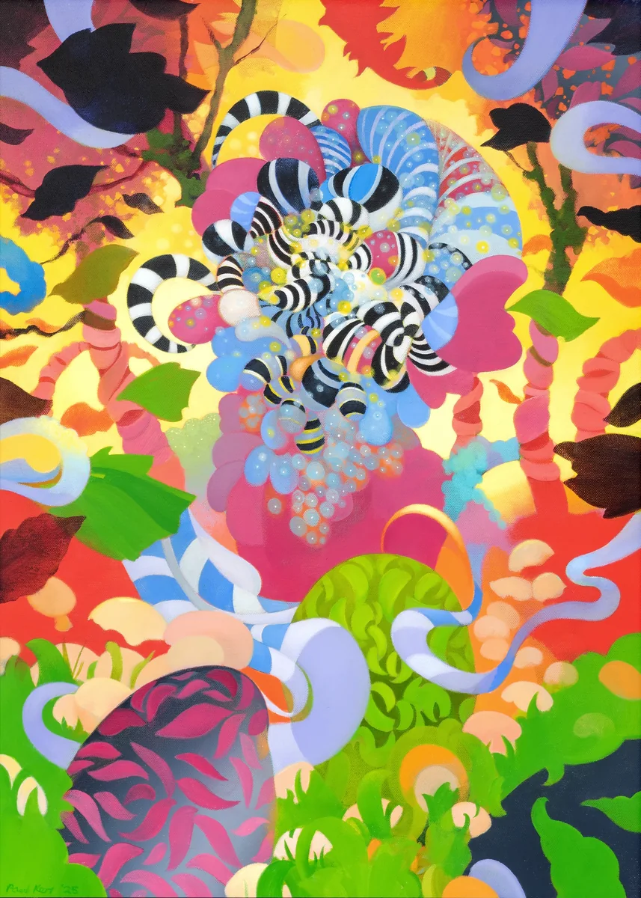
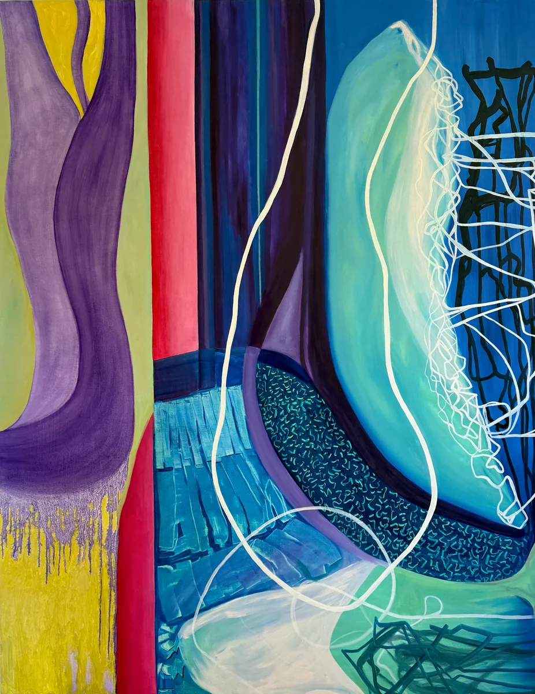

Contemporary Art.
Discover original Irish art and the artists behind it.


Selected by PlotArt
Artists in Focus
A changing selection of artists and their work.

Blowout Series II #2, 2021 · Leah Hewson Leah Hewson
Painting, Prints, installation, murals, sculpture.
Hewson has a First-Class BA(Hons) degree in Fine Art from IADT, Dublin Ireland.

The Universe is in me, 2025 · Rasher Mark Kavanagh Rasher Mark Kavanagh
Painter · Wicklow
Rasher, is a self-taught artist based in Wicklow. His emotionally resonating oil paintings have been exhibited and collected from Dublin London , San Francisco & Los Angeles exhibited at Chateau Marmont in 2006 .

Portal, 2025 · Naomi Taitz Duffy Naomi Taitz Duffy
painter
Naomi Taitz Duffy is an abstract painter whose practice is rooted in geometric abstraction with a focus on color relationships.

The Creation Of Adam, 2026 · Paul Kerr Paul Kerr
Painter · Donegal
I was born in 1965 in Dungannon, Co Tyrone. My passion for art began in my early teens and became an obsession by the time i was accepted for art college in 1983. Unfortunately i was unable to go as my life took a different direction .

Non-Serviam, 2018 · PIGSY PIGSY
Mixed Media Painting · Dublin
PIGSY is the artistic identity of Dublin-born Irish artist Ciarán McCoy. His practice centres on painting, exploring the psychological terrain of language, memory, identity and belonging through bold, instinctive mark-making.

I love you, 2026 · Nick Munier Nick Munier
Painter
NICK MUNIER Nick Munier | Contemporary Artist Nick Munier is a contemporary artist whose creative journey has taken him from the high-pressure world of professional kitchens and television to the freedom and experimentation of abstract art.
Explore the collection
Explore More Artists

Daniel Chester
Painter · Leitrim

Anna Marie Savage
Painter

Fintan Whelan
Painter

Nessa McCormack
Painter · Wicklow

Clare O'Connor
Abstract Painter, Printmaker

Sarah Fitzgibbon
Fine art printmaker specialising in screen printing.

Carolyn Walsh
PAINT, PRINT, PHOTOGRAPHY · Dublin

Olivia Jones
Visual Artist · Sligo

Karen Ebbs
Painter, Colourist, Sculptor, Immersive Installation

Louise Shearer
Painter

Lena Fawaz
Painter · Dublin

Carmel Marrinan
Abstract Expressionist artist .